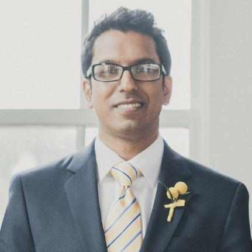

About Me

Hello. I'm Kamran. I am originally from Thousand Oaks, California, and I moved to Durham, North Carolina, in 2014. I have a bachelor's degree in Sociology from the University of California, Davis (Go Aggies!). My background is mostly in Quality Assurance, but only on the manual side. I am hoping this program will help me learn some automation QA, though, if web design is something I really like, I might stick with it.
My hobbies include playing the drums, reading, video games, anime, hiking, building computers and tech in general. I've recently started getting into board games with some friends.